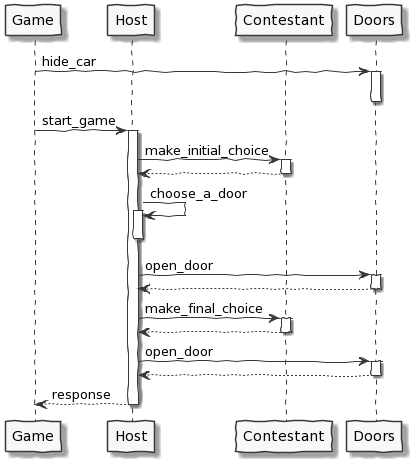
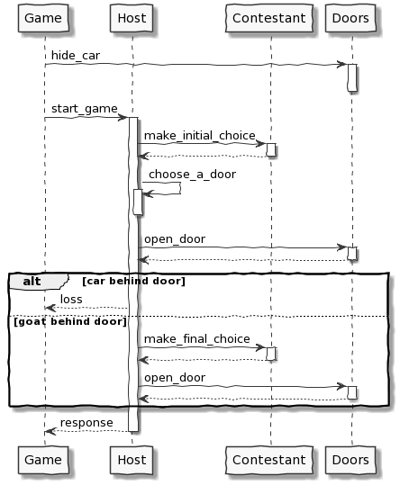

risorse | paradosso delle tre porte
Supponi di partecipare a un gioco a premi, in cui puoi scegliere fra tre porte: dietro una di esse c'è un'automobile, dietro le altre, capre. Scegli una porta, diciamo la numero 1, e il conduttore del gioco a premi, che sa cosa si nasconde dietro ciascuna porta, ne apre un'altra, diciamo la 3, rivelando una capra. Quindi ti domanda: "Vorresti scegliere la numero 2?" Ti conviene cambiare la tua scelta originale?
Dalla pagina Problema di Monty Hall di Wikipedia.
Per quanto possa apparire controintuitivo la risposta è affermativa, cambiare la scelta originale raddoppia le probabilità di vincita. La pagina di Wikipedia ne spiega nel dettaglio le ragioni, qui l'idea è di simulare il gioco e verificare sperimentalmente i risultati teorici.
Se il conduttore sa dove si nasconde l'auto lo svolgimento del gioco è il seguente:
Il primo passo è modellare le porte:
CAR = "the car"
GOAT = "a goat"
class Doors:
def __init__(self, car):
self.car = car
self.num = range(3)
def open(self, index):
return CAR if index == self.car else GOAT
car indica la porta che nasconde l'auto, num una variabile di comodo che contiene l'elenco del numero delle porte per evitare di inquinare il codice di «range(3)».
L'oggetto Game è in realtà una funzione:
import random
...
def play():
doors = Doors(random.randint(0, 2))
contestant = NaiveContestant()
host = Host()
return host.start_game(doors, contestant)
Il programma principale invoca la funzione play per un certo numero di volte per stimare le probabilità di vittoria per il contestant prescelto — Naive, per cominciare:
if __name__ == "__main__":
GAMES = 1000
wins = sum(1 for x in range(GAMES) if play() == CAR)
print("{} wins on {} games ({:.1f}%)".format(
wins, GAMES, wins * 100. / GAMES))
Veniamo al conduttore — Host — che segue un copione ben preciso:
class Host:
def start_game(self, doors, contestant):
print("H: Pick a door...")
initial_choice = contestant.make_initial_choice()
my_door = self.choose_a_door(doors, initial_choice)
prize_behind_my_door = doors.open(my_door)
assert(prize_behind_my_door != CAR)
print("H: Behind door number {} there's... {}!".format(
my_door + 1, prize_behind_my_door))
option = [x for x in doors.num if x not in [initial_choice, my_door]][0]
print("H: Do you want to pick door number {}?".format(option + 1))
final_choice = contestant.make_final_choice(option)
if final_choice == initial_choice:
print("H: You keep door number {}...".format(final_choice + 1))
else:
print("H: You choose door number {}...".format(final_choice + 1))
prize = doors.open(final_choice)
print("H: You won... {}!".format(prize))
return prize
def choose_a_door(self, doors, initial_choice):
unfit_doors = [initial_choice, doors.car]
suitable_doors = [x for x in doors.num if x not in unfit_doors]
return random.choice(suitable_doors)
Il metodo start_game ricalca fedelmente lo svolgersi del gioco. Il metodo choose_a_door implementa la strategia adottata dal conduttore per determinare la porta da aprire: una a caso tra le disponibili una volta eliminata quella scelta dal concorrente e quella che nasconde l'auto.
Resta da implementare il concorrente, che ha due responsabilità: scegliere una porta all'inizio del gioco — metodo make_initial_choice —, quindi decidere se confermare la scelta o cambiare dopo che il conduttore ha aperto la sua porta. La prima azione è comune alle due incarnazioni del concorrente della simulazione, il “naive” che conferma la sua scelta iniziale e lo “smart” che invece accetta il cambio:
class Contestant:
def make_initial_choice(self):
self.choice = random.randint(0, 2)
print("C: I choose door number {}.".format(self.choice + 1))
return self.choice
class NaiveContestant(Contestant):
def make_final_choice(self, option):
print("C: I keep door number {}.".format(self.choice + 1))
return self.choice
class SmartContestant(Contestant):
def make_final_choice(self, option):
print("C: I pick door {}.".format(option + 1))
return option
Il codice completo è disponibile qui.
I risultati confermano la probabilità di vittoria di 1 a 3:
... H: Pick a door... C: I choose door number 3. H: Behind door number 1 there's... a goat! H: Do you want to pick door number 2? C: I keep door number 3. H: You keep door number 3... H: You won... the car! H: Pick a door... C: I choose door number 1. H: Behind door number 3 there's... a goat! H: Do you want to pick door number 2? C: I keep door number 1. H: You keep door number 1... H: You won... a goat! 351 wins on 1000 games (35.1%)
Come va al concorrente più avveduto?
def play():
doors = Doors(random.randint(0, 2))
contestant = NaiveSmartContestant()
host = Host()
return host.start_game(doors, contestant)
Anche in questo caso la simulazione conferma la teoria:
... H: Pick a door... C: I choose door number 3. H: Behind door number 1 there's... a goat! H: Do you want to pick door number 2? C: I pick door 2. H: You choose door number 2... H: You won... the car! H: Pick a door... C: I choose door number 2. H: Behind door number 3 there's... a goat! H: Do you want to pick door number 1? C: I pick door 1. H: You choose door number 1... H: You won... a goat! 656 wins on 1000 games (65.6%)
Un'interessante variazione presuppone che il conduttore non sappia dove si nasconda l'auto, e apra perciò una porta a caso tra le due non scelte dal concorrente; se apre proprio la porta vincente, il gioco si interrompe e il concorrente perde.
La teoria dimostra che le due strategie “naive” e “smart” in questo caso si equivalgono, realizzando entrambe il 33% delle vincite. Lo si può verificare nella pratica modificando di poco il codice dell'Host:
class Host:
def start_game(self, doors, contestant):
print("H: Pick a door...")
initial_choice = contestant.make_initial_choice()
my_door = self.choose_a_door(doors, initial_choice)
prize_behind_my_door = doors.open(my_door)
assert(prize_behind_my_door != CAR)
print("H: Behind door number {} there's... {}!".format(
my_door + 1, prize_behind_my_door))
if prize_behind_my_door == CAR:
print("H: Ops, you loose...")
return GOAT
option = [x for x in doors.num if x not in [initial_choice, my_door]][0]
print("H: Do you want to pick door number {}?".format(option + 1))
final_choice = contestant.make_final_choice(option)
if final_choice == initial_choice:
print("H: You keep door number {}...".format(final_choice + 1))
else:
print("H: You choose door number {}...".format(final_choice + 1))
prize = doors.open(final_choice)
print("H: You won... {}!".format(prize))
return prize
class AwareHost(Host):
def choose_a_door(self, doors, initial_choice):
unfit_doors = [initial_choice, doors.car]
suitable_doors = [x for x in doors.num if x not in unfit_doors]
return random.choice(suitable_doors)
class UnawareHost(Host):
def choose_a_door(self, doors, initial_choice):
suitable_doors = [x for x in doors.num if x != initial_choice]
return random.choice(suitable_doors)
def play():
doors = Doors(random.randint(0, 2))
contestant = SmartContestant()
host = UnawareHost()
return host.start_game(doors, contestant)
Il codice completo è disponibile qui.
La strategia “naive” conferma le sue prestazioni:
... H: Pick a door... C: I choose door number 1. H: Behind door number 3 there's... the car! H: Ops, you loose... H: Pick a door... C: I choose door number 1. H: Behind door number 3 there's... a goat! H: Do you want to pick door number 2? C: I keep door number 1. H: You keep door number 1... H: You won... the car! H: Pick a door... C: I choose door number 2. H: Behind door number 3 there's... a goat! H: Do you want to pick door number 1? C: I keep door number 2. H: You keep door number 2... H: You won... a goat! 325 wins on 1000 games (32.5%)
La versione “smart” in questo caso è equivalente alla “naive”:
H: Pick a door... C: I choose door number 2. H: Behind door number 1 there's... a goat! H: Do you want to pick door number 3? C: I pick door 3. H: You choose door number 3... H: You won... the car! H: Pick a door... C: I choose door number 1. H: Behind door number 2 there's... the car! H: Ops, you loose... H: Pick a door... C: I choose door number 1. H: Behind door number 2 there's... the car! H: Ops, you loose... 338 wins on 1000 games (33.8%)
La strategia di cambiare porta non avvantaggia più il concorrente “smart” perché non può sfruttare la conoscenza a priori del conduttore che in questo caso non è presente.
Pagina modificata il 06/12/2020